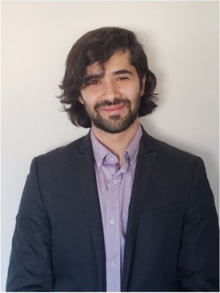
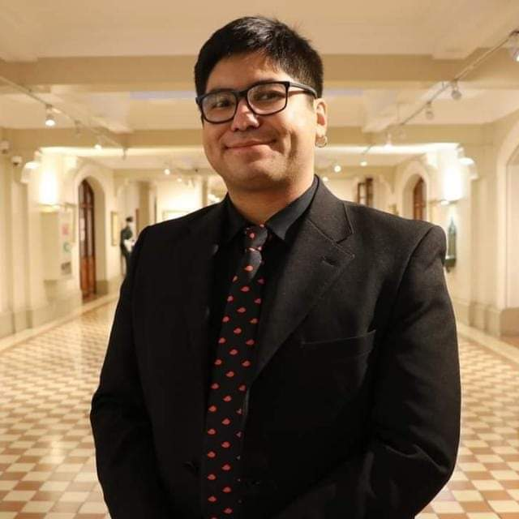
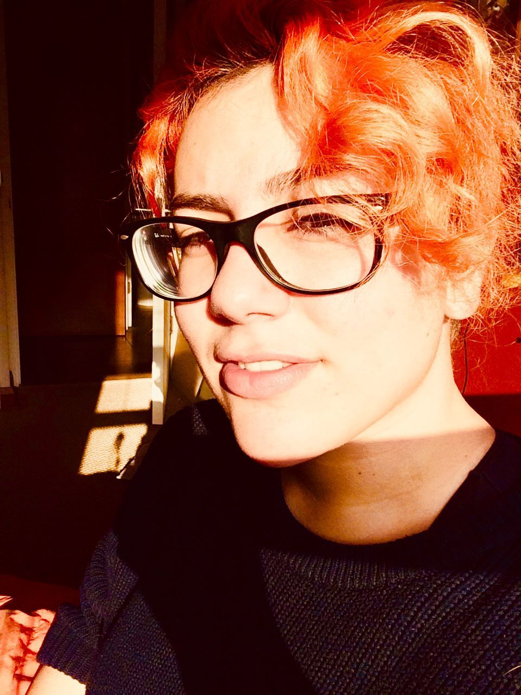
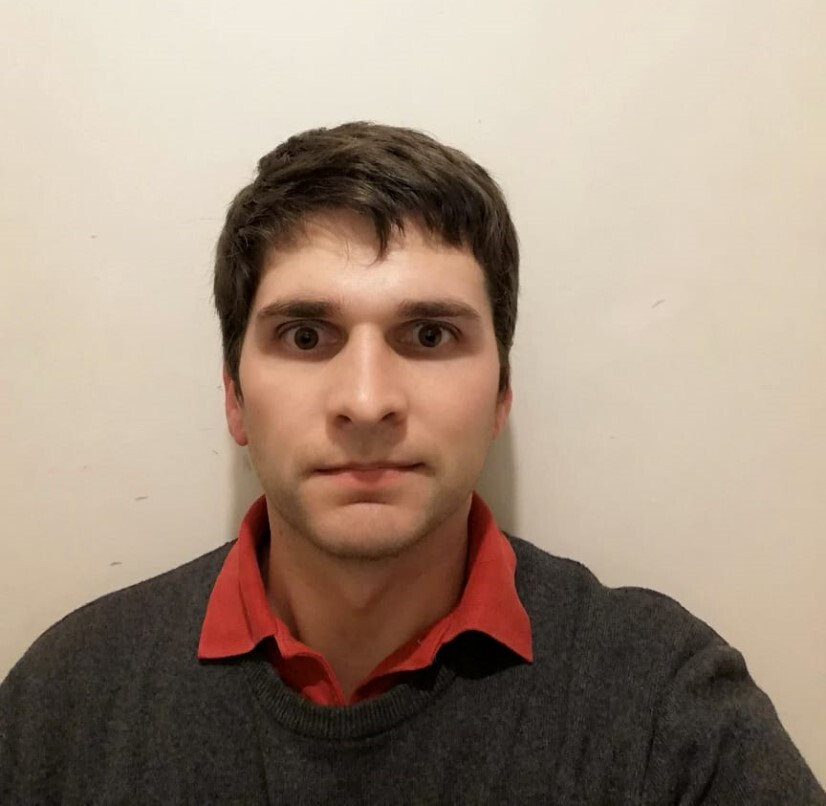
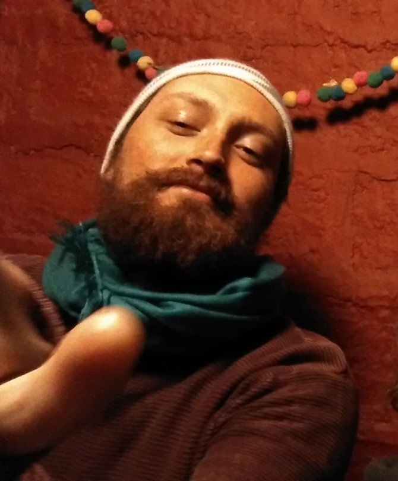

Civilis está conformado por un grupo multisciplinario de profesionales, quienes provienen de
distintas regiones del país, compormetidos con la descentralización, la colaboración y la participación ciudadana.

Martín Salazar: Co-fundador, Desarrollador
Ingeniero Civil Pontificia Universidad Católica de Chile

Roddy Millones: Co-fundador, Abogado
Abogado Universidad de Atacama, Magíster(c) Universidad Andrés Bello

Carolina Contreras: Co-fundadora, Diseñadora-Concept art
Cine y Televisión Universidad de Chile, Estudiante CG Sprectrum
Piero Morata: Desarrollador UI/UX
Psicólogo Social Pontificia Universidad Católica de Chile

Joaquín Hoffmann: Desarrollador
Ingeniero Civil Pontificia Universidad de Chile, Magíster Pontificia Universidad Católica de Chile

Juan Francisco Concha:Analista
Sociólogo Pontificia Universidad Católica de Chile